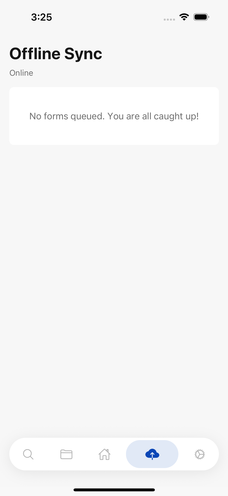
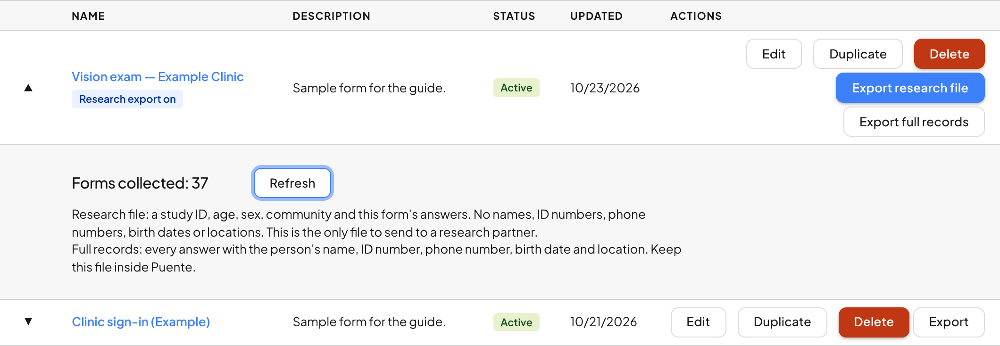

1The ideaLa idea
By the end of this guide you canAl terminar esta guía podrás
- prepare every phone so it works without signal;preparar cada teléfono para que funcione sin señal;
- avoid the two mistakes that lose or double patients;evitar los dos errores que pierden o duplican pacientes;
- make sure every form reaches Puente each evening;asegurarte de que cada formulario llegue a Puente cada noche;
- fix the common problems yourself, and know which ones to report.arreglar los problemas comunes tú mismo, y saber cuáles reportar.
A clinic often has no signal. That's fine: Collect saves every form on the phone and sends it later. But between saving and sending, the form exists in only one place, that phone. Almost everything on this page protects that gap.
Una clínica muchas veces no tiene señal. Está bien: Collect guarda cada formulario en el teléfono y lo envía después. Pero entre guardar y enviar, el formulario existe en un solo lugar, ese teléfono. Casi todo en esta página protege ese intervalo.
2Who does whatQuién hace qué
| PersonPersona | JobTarea |
|---|---|
| CoordinatorCoordinador | Owns the form, the paper sign-in sheet and the final count. Talks to the research team.Es dueño del formulario, la hoja de registro en papel y el conteo final. Habla con el equipo de investigación. |
| Tech leadResponsable técnico | Prepares every phone, runs the evening sync, and is the first person anyone asks about the app.Prepara cada teléfono, hace la sincronización de la noche, y es la primera persona a quien se pregunta por la app. |
| SurveyorsEncuestadores | Search, register, fill in the exam form. Never log out.Buscan, registran, llenan el formulario del examen. Nunca cierran sesión. |
The tech lead reads this page and Collecting without a signal before the clinic, not during it.
El responsable técnico lee esta página y Recoger datos sin señal antes de la clínica, no durante.
3Two days beforeDos días antes
Do this on every phone that will collect, somewhere with a working internet connection.
Haz esto en cada teléfono que va a recoger datos, en un lugar con internet.
- Update Puente Collect from the App Store or Google Play. It must be version 15.7.5 or later.Actualiza Puente Collect desde la App Store o Google Play. Debe ser la versión 15.7.5 o posterior.
- Sign in with the clinic organization's account. Signing in needs internet, so do it now, not at the clinic.Inicia sesión con la cuenta de la organización de la clínica. Iniciar sesión necesita internet, así que hazlo ahora, no en la clínica.
- Open the exam form once, so the phone keeps a copy of it.Abre el formulario del examen una vez, para que el teléfono guarde una copia.
- Test without signal. Turn on airplane mode, fill in the form for an invented patient, and save. You should see the offline banner, then “Saved offline — will sync when you reconnect”.Prueba sin señal. Activa el modo avión, llena el formulario de un paciente inventado y guarda. Debes ver el aviso sin conexión, y luego «Guardado sin conexión — se sincronizará cuando te reconectes».
- Open “Offline Sync”. The form is waiting there. Discard it, so the invented patient never reaches the research data.Abre «Sincronización sin conexión». El formulario está esperando ahí. Descártalo, para que el paciente inventado nunca llegue a los datos de investigación.
- Write the phone on a list: who carries it, and whether it passed the test.Anota el teléfono en una lista: quién lo lleva y si pasó la prueba.


Bring chargers, and one power bank for every two phones. A phone with a dead battery keeps its forms, but it can't collect new ones.
Lleva cargadores y una batería externa por cada dos teléfonos. Un teléfono sin batería guarda sus formularios, pero no puede recoger nuevos.
4Search before you registerBusca antes de registrar
The most common mistake at a clinic is registering someone who is already in Puente. The app does not warn you. The patient just ends up as two people, and their visits split between them.
El error más común en una clínica es registrar a alguien que ya está en Puente. La app no avisa. El paciente simplemente termina siendo dos personas, y sus visitas quedan divididas entre las dos.
Search by surname, or by the start of the cédula number. A full name, first and last together, finds nobody.
Busca por apellido, o por el inicio del número de cédula. Un nombre completo, nombre y apellido juntos, no encuentra a nadie.


Why a full name fails, and more ways to search: Finding someone you already surveyed.
Por qué falla un nombre completo, y más formas de buscar: Encontrar a alguien que ya encuestaste.
5During the clinicDurante la clínica
- One exam form per patient visit. Everything measured at that visit goes in the same form.Un formulario de examen por visita. Todo lo que se mide en esa visita va en el mismo formulario.
- The offline banner is normal. “You're offline. Records will save and sync automatically.” Keep working.El aviso sin conexión es normal. «Estás sin conexión. Los registros se guardarán y sincronizarán automáticamente.» Sigue trabajando.
- Never log out, never clear the app's data, never uninstall. Forms that haven't been sent live inside the app.Nunca cierres sesión, nunca borres los datos de la app, nunca la desinstales. Los formularios que no se han enviado viven dentro de la app.
- If a patient does not consent, answer “No” to the consent question, and follow the clinic's paper process for their care.Si un paciente no da su consentimiento, responde «No» a la pregunta de consentimiento, y sigue el proceso en papel de la clínica para su atención.
- Write every patient on the paper sign-in sheet. It is how the coordinator checks, later, that nobody was lost.Anota a cada paciente en la hoja de registro en papel. Así el coordinador comprueba después que no se perdió nadie.
6Each eveningCada noche
- Connect every phone to a reliable wifi network.Conecta cada teléfono a una red wifi confiable.
- Open “Offline Sync” and tap “Retry”.Abre «Sincronización sin conexión» y toca «Reintentar».
- Wait until the screen says “No forms queued. You are all caught up!”Espera hasta que la pantalla diga «No hay formularios en cola. ¡Estás al día!»
- The tech lead marks the phone as done on the list. A phone that isn't marked isn't finished for the day.El responsable técnico marca el teléfono como listo en la lista. Un teléfono sin marcar no ha terminado el día.

Then, on a computer, check the total. In Manage, open Form Manager, expand the exam form's row with the arrow, and press Refresh. Compare the number with the sign-in sheet.
Luego, en una computadora, revisa el total. En Manage, abre el Gestor de formularios, expande la fila del formulario del examen con la flecha, y pulsa Actualizar. Compara el número con la hoja de registro.

7When something breaksCuando algo falla
| What happenedQué pasó | What to doQué hacer |
|---|---|
| A form stays in the queue after “Retry”.Un formulario sigue en la cola después de «Reintentar». | It is still on the phone; the app says “Your forms are still saved on this device. Nothing has been lost.” Try again on a better connection. Don't discard it.Sigue en el teléfono; la app dice «Tus formularios siguen guardados en este dispositivo. No se ha perdido nada.» Inténtalo de nuevo con mejor conexión. No lo descartes. |
| Some forms sent, some didn't.Algunos formularios se enviaron y otros no. | Normal on a weak connection. The ones that went are safe. Retry the rest.Es normal con una conexión débil. Los que se enviaron están a salvo. Reintenta los demás. |
| A phone's battery died.Un teléfono se quedó sin batería. | Charge it and open the app again. Its forms are still there. Don't reinstall.Cárgalo y abre la app otra vez. Sus formularios siguen ahí. No la reinstales. |
| Someone wants to log out with forms waiting.Alguien quiere cerrar sesión con formularios pendientes. | The app warns them. They shouldn't. Sync first, on wifi.La app le avisa. No debe hacerlo. Primero sincroniza, con wifi. |
| The app won't open.La app no abre. | Restart the phone. Don't clear storage or reinstall; that deletes forms that haven't been sent.Reinicia el teléfono. No borres el almacenamiento ni la reinstales; eso elimina los formularios que no se han enviado. |
| A patient was registered twice.Un paciente se registró dos veces. | Write both names on the sign-in sheet and carry on. The coordinator fixes it after the clinic. Don't delete either.Escribe los dos nombres en la hoja de registro y sigue. El coordinador lo corrige después de la clínica. No elimines ninguno. |
More detail on each of these: Collecting without a signal.
Más detalle sobre cada uno: Recoger datos sin señal.
8When to contact the Puente tech teamCuándo contactar al equipo técnico de Puente
Only if no phone can save forms at all, or a sync seems to have lost forms. Everything else on this page can wait until after the clinic.
Solo si ningún teléfono puede guardar formularios, o una sincronización parece haber perdido formularios. Todo lo demás en esta página puede esperar hasta después de la clínica.
Write to info@puente-dr.org with which phone, what time, and a photo of the screen.
Escribe a info@puente-dr.org con qué teléfono, a qué hora, y una foto de la pantalla.
9After the clinicDespués de la clínica
- Do the evening sync one last time on every phone.Haz la sincronización de la noche una última vez en cada teléfono.
- Check the total in Form Manager against the sign-in sheet. If they differ, find out why before sending anything.Compara el total del Gestor de formularios con la hoja de registro. Si no coinciden, averigua por qué antes de enviar nada.
- Then follow Sharing data with researchers.Luego sigue Compartir datos con investigadores.
Check yourselfComprueba lo que aprendiste
A phone shows the offline banner. What do you do?Un teléfono muestra el aviso sin conexión. ¿Qué haces?
Keep working. Forms save on the phone and are sent at the evening sync.
Sigue trabajando. Los formularios se guardan en el teléfono y se envían en la sincronización de la noche.
A surveyor types “Ana Pérez” and finds nobody. Is Ana new?Un encuestador escribe «Ana Pérez» y no encuentra a nadie. ¿Ana es nueva?
Not necessarily. A full name never matches. Search “Pérez”, or the start of her cédula.
No necesariamente. Un nombre completo nunca coincide. Busca «Pérez», o el inicio de su cédula.
When is a phone finished for the day?¿Cuándo termina el día un teléfono?
When Offline Sync says “No forms queued. You are all caught up!” and the tech lead has marked it on the list.
Cuando Sincronización sin conexión dice «No hay formularios en cola. ¡Estás al día!» y el responsable técnico lo marcó en la lista.